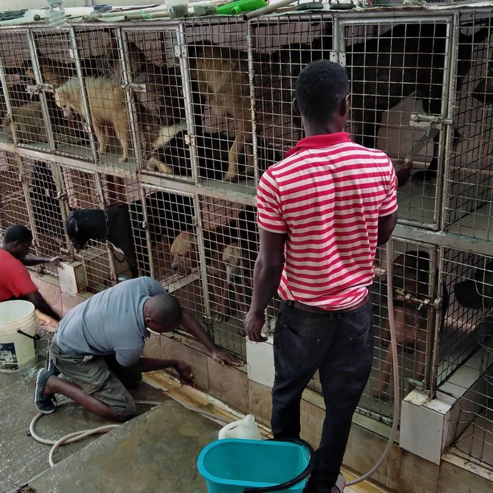

Puppy or dog; Cats or Rabbits?
Before getting a dog it’s important to consider what is involved in being a responsible owner and to decide whether you’ll be able to meet all your dog’s needs throughout their lifetime. Dogs are wonderful companions but owning one is a long-term commitment,
so make sure you are ready.
 Puppies are adorable but it is important to remember this phase doesn’t last long, and all dogs grow up very quickly. Caring for a puppy generally takes more time and effort than caring for an older dog,
so if it is a puppy you are after, be prepared for extra work. If you’re not particularly looking for a puppy,
there are plenty of great things about getting an older dog. Older dogs may have (at least) basic training and have grown out
of those puppy habits, like the teething phase when pups chew on everything!
Puppies are adorable but it is important to remember this phase doesn’t last long, and all dogs grow up very quickly. Caring for a puppy generally takes more time and effort than caring for an older dog,
so if it is a puppy you are after, be prepared for extra work. If you’re not particularly looking for a puppy,
there are plenty of great things about getting an older dog. Older dogs may have (at least) basic training and have grown out
of those puppy habits, like the teething phase when pups chew on everything!
To help you decide between a puppy and an adult dog, ask yourself the following questions:
- Would I like a dog that is already toilet trained? Toilet training a puppy usually means taking them to a toilet area up to 10 times a day (and during the night as well) and rewarding them when they ‘go’ in the right spot. You will also probably find yourself cleaning up after the inevitable accidents during the learning phase. Older dogs often have at least some basic toilet training habits.
- Would I like a dog that already has some basic obedience skills (e.g., sits for you, can walk well on a lead)? Puppies will need to be taken to puppy classes and taught all of these skills using reward-based training Puppy and dog training school is a very important part of being a responsible pet owner and while some older dogs often have basic training, they will still require some attention and guidance.
Would I like a dog that already has basic social skills (e.g., can interact safely and politely with other dogs and people)? The first 3-17 weeks of a puppy’s life are critical for their social and behavioural development. During this time it’s important to make sure they have plenty of positive experiences with a variety of different people, places, sights and sounds, as they will influence your dog’s behaviour throughout the rest of their lives.
Can I afford a dog?

There are many costs involved with dog ownership; they are an expensive addition to any family.
Ask yourself, can I afford:
- All of the upfront costs of getting a dog or puppy like vaccinations, microchipping, registration and desexing?
- Annual council registration fees, if required in my area?
- Good quality food for my dog throughout their lifetime?
- Routine health care (like worming)?
- Obedience training classes?
- Leash, collar, toys?
- Bedding?
- Boarding, if I go away?
- Veterinary treatment in case of emergency or accident?
Is my home suitable?

>
Image: Flickr
Carefully consider whether your home is suitable for your dog.
Ask yourself:
- If I have a yard, is it secure? Are there toys and activities to keep my dog entertained while I’m not home, so it doesn’t get bored, bark or be destructive?
- If I don’t have a yard, where will my dog be while I’m not home? If it is inside, where will it go to the toilet? Can I get home to let it outside every few hours?
- Is there safe, outdoor space or a dog park close by that I can regularly take my dog to exercise?
- If I rent my property, has my landlord given me written permission to have a dog and if so, do they have any additional requirements? What will happen if I have to move?
Will a dog or puppy fit into my lifestyle?

Working hours, a busy social life and taking regular trips away from home are all factors that need to be considered
before becoming a dog owner.
Dogs thrive on human company and will always depend on you.
It is important that your lifestyle is compatible with caring for a dog so you can meet their needs throughout their lifetime.
Ask yourself:
- Do I have time each and every day to care for a puppy or a dog?
- Will I be home in time each day to feed a dog?
- Do I have time to take my puppy or dog to ‘school’ for training and to practice every day with reward-based training throughout its life?
- Am I prepared to walk a dog at least once every day, or twice a day for an active type of dog?
- How often am I at home to keep a dog company?
- Will I have time to groom a dog or puppy regularly?
- Who will care for my dog when I’m away, either travelling or if I’m sick or injured?
- Being in the know from the get go -
Before getting a Pet it’s important to consider what is involved
in being a responsible owner and to decide whether you’ll be able to meet all
your Pet’s needs throughout their lifetime.
Pets are wonderful companions but owning one is a long-term commitment,
so make sure you are ready.
YOU ARE EXCITED BUT ASK?
- Do I want a pet?
- Can I cover all the financial costs of owning a dog, beyond just the purchase price, including food, bedding, toys and veterinary check-ups and treatment including emergencies?
- Is my home safe, secure and suitable for a dog?
- Do I have time to train and socialise a dog?
- Will I be able to provide them with enough company so they don’t get lonely or bored? A dog that doesn’t receive enough attention is unlikely to become a social and well-behaved pet.
- Do I have time to walk and play with a dog every day?
- Am I ready to make a 15-year commitment?
Your local RSPCA or vet can give you more information about what it takes to raise a polite and well-balanced puppy and care for it throughout its lifetime.
If you think you are ready to welcome a new puppy or dog into your life, then it is time to carefully consider what type of dog will suit you.
- A very active, moderately active, or less active dog? (remembering less active dogs still need daily exercise)
- A dog that is already well trained? A dog that needs minimal training? Or a dog that needs me to start with the most basic training?
- A dog that is good with children? Good with strangers?
- A quiet, calm dog? Or a more playful, outgoing dog?
- A dog that can already be walked easily on a lead? Or a dog that needs me to teach it how to walk on a lead?
- A small, medium or large-sized dog?
- A dog with high, moderate or low grooming requirements?
While every dog is its own unique personality, there are some general behavioural traits associated with different breed types. Thinking about these traits can help you choose the right type of dog for you:
Terrier-type dogs were originally bred for chasing rats and mice on farms, so they love to chase, dig and bark. They are often fearless towards other dogs and need lots of stimulation and exercise. They can be skilled escapers who can squeeze through small gaps. Staffie-type dogs tend to be less independent than other terriers and often don’t cope alone.
Originally bred to work with sheep and cattle, working dogs love to round things up (sometimes children!). They are intelligent and easy to train but they need lots of physical exercise and mental stimulation. These dogs are not generally suited to a suburban backyard lifestyle.
- Did the breeder plan ahead for this litter ensuring there were enough good homes for all the puppies?
- Does the breeder let you visit the breeding place and meet the mother dog (and father too, if he’s around)?
- Are you impressed with the standard of care and living conditions for all the dogs?
- Is the breeder genuinely concerned about the welfare of their dogs, open to questions and able to provide a complete history of the puppy?
- Have the puppies been health checked by a veterinarian, vaccinated, microchipped, and treated for internal and external parasites like intestinal worms and fleas?
- Does the breeder make sure that you and the puppy will suit each other? Do they ask you questions to make sure you will be a responsible owner?
- Is your puppy bred to be a healthy pet, with a suitable temperament and free from known inherited disorders?
- Does the breeder offer to provide on-going support and information after purchase and do they provide a guarantee? A good breeder will offer to take back unwanted animals within a specific time period after sale, or at any point in the future if the animal has problems arising from an inherited disorder.
- Does the breeder talk to you about desexing, training, socialisation and local government registration requirements?
- Does the breeder provide references to back up what they have told you?
- Is the breeder meeting all legal requirements? Legal requirements vary from state to state so contact the local council in the breeder’s area and ask whether breeders have to be registered with them and if there is a code of practice or guidelines they should be following.
The following Animals are available for Adoption
Puppies in different breeds

While every dog is its own unique personality,
puppies are good companions,
as they grow old they become best friends
Rabbits

Rabbits are the fiercest of all pets, it is timid but smart. gets along with human easily
Cats

Cats It is the only domesticated species in the family Felidae and is commonly
referred to as the domestic cat or house cat to distinguish from the wild members of the family
Dogs in diverse breeds
An animal shelter or pound is a place where stray,
lost, abandoned or surrendered animals mostly dogs and cats – are housed.
It is noteworthy that the ancestors of the other common household pet, the dog, were social animals that lived together in packs in which there was subordination to a leader, and the dog has readily transferred its allegiance from pack leader to human master. The cat, however, has not yielded as readily to subjugation. Consequently,
the house cat is able to revert to complete self-reliance more quickly and more successfully than most domesticated dogs. For an account of the relationship of the family of cats to other carnivores, see carnivore.

watch the video to understand the lifestyleof Cats
The earliest known indication for the taming of an African wildcat (F. lybica) was excavated close by a human Neolithic grave in Shillourokambos, southern Cyprus, dating to about 7500–7200 BC. Since there is no evidence of native mammalian fauna on Cyprus, the inhabitants of this Neolithic village most likely brought the cat and other wild mammals to the island from the Middle Eastern mainland.[47] Scientists therefore assume that African wildcats were attracted to early human settlements in the Fertile Crescent by rodents.